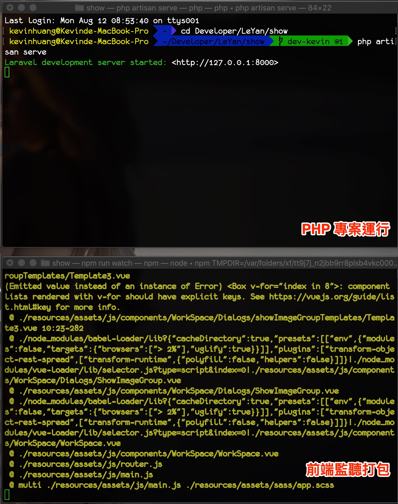
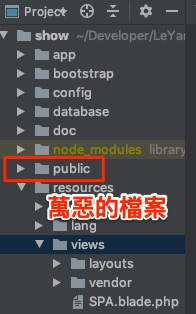
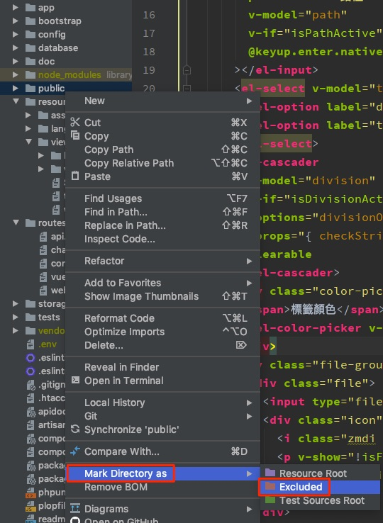
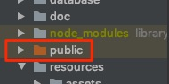

前言
最近遠端工作的案子都是一些前端的專案，一直以來我都是用Visual Code加一些針對語言的額外Plugin來開發前端的專案，不過剛好聽到同事在說JetBrains 的 WebStorm IDE蠻好用的，因此就趁著最近都在家裡工作+打混摸魚的時刻來試一下這款沒碰過的IDE。

花了些時間調整字型、字體大小、Code Highlight等會讓我工作更舒適的東西之後，我就開始拿這個IDE開始實作需求了。
我寫程式有個習慣，那就是打了一部分Code之後就會Beautify一下Code，或是看到ESLint在嗆我我就會去理他一下，但在開發專案的時候我發現一件讓我很困擾的事情，那就是這個IDE一直不斷地顯示他在indexing（如下圖）
而在indexing的時候，我就沒辦法使用WebStorm內建的Prettier或者用alt + Enter去自動讓ESLint幫我解決它的報錯。
一開始就乖乖得等他indexing好，但後來發現，天啊怎麼在我寫Code的一整個下午時間裡，大半的時間他都在indexing呀！這樣好像不太正常
花了一些查了些資料後，終於在看了一些文章之後找到了解決辦法。而在講解決辦法之前先來說一下為什麼會有這個indexing endless的情況出現吧。
原因與解決辦法
發生Indexing Endless的原因
因為我在做的這個專案是一個PHP + Vue.js的專案，而當初建立專案架構的人是自己寫了Webpack會把前端的東西包成靜態檔案，並且放到一個/public的資料夾下。
而我平常開發的時候我的command line會開兩個視窗，一個是run PHP Laravel框架的運行環境，另一個就是用node來監聽我前端檔案的變化，並且即時地去呼叫WebPack幫我打包檔案，這樣我就可以在我在編輯器中每按下一次儲存時，自動觸發包成靜態檔案，就可以直接在瀏覽器上看到Feature變化了。

回到正題，就是因為上述的情況，因此對IDE來說，我的靜態檔案一直不斷不斷的在變更，而WebStorm畢竟是一款IDE，因此他在偵測到靜態檔案變更後，會不斷的re-index我們的檔案，造成我整個開發過程都是不斷的在indexing檔案的狀況（WebStorm真是好棒棒好認真re-index呀！xD）
因此解決辦法就是，我們要將所有會持續變更（比如靜態檔案、套件模組檔案）都排除在IDE的re-index範圍內，這樣就可以防止IDE不斷的在re-index，以至於prettier或者ESlint修正工具都不能用的狀況。
解決步驟
- 首先我們先望向我們的專案檔案目錄，找到你要排除的那個檔案（不要問我要排除啥檔案，要按照你的專案來判斷囉，你的專案你最了解xD）：
- 接下來對那個檔案點右鍵看到選單，並且找到「Make Directory as 」-> 「Excluded」：
- 然後你就會看到資料夾變色拉！這就代表他已被排除在專案名單之外，IDE就不會一直找碴去監聽這個資料夾的變化囉！（上面的node_modules呈現一個很詭異的土黃色xDDD）：
結語
大概就是這樣的一個情況，想說可能半年一年後自己或朋友遇到這樣的情況，我一定就忘記我當初是怎麼解決的了。
因此就來小小紀錄一下，如果最近對新IDE有興趣，或者你已經寫前端很久但是都是用Sublime Text 或者Visual Studio Code再開發的話，我推薦你可以玩看看JetBrains WebStorm這款IDE哦～（我們可以一起交流學習，我也還不是很熟）